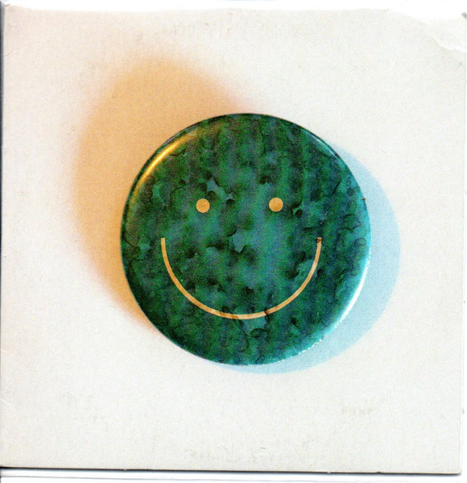

Bem-vindo(a) ao meu site dedicado a Mac DeMarco!
Aqui você encontrará um verdadeiro mergulho no mundo musical desse talentoso artista. Prepare-se para explorar a autenticidade e a singularidade que envolvem a música de Mac DeMarco. Seja você um fã de longa data ou um novo ouvinte curioso, este é o lugar perfeito para se envolver com sua discografia, letras de músicas e muito mais. Mac DeMarco é conhecido por sua abordagem descontraída e cativante da música. Seus sons que mesclam indie rock, rock psicodélico e elementos do pop criam uma atmosfera envolvente e única. Ao navegar neste site, você terá a oportunidade de explorar cada álbum, mergulhar nas letras profundas e desfrutar de uma experiência musical rica e envolvente. Além da discografia completa de Mac DeMarco, você encontrará curiosidades fascinantes sobre sua carreira, análises detalhadas de álbuns, entrevistas exclusivas e muito mais. Nosso objetivo é proporcionar um espaço dedicado aos fãs para se conectarem e se aprofundarem no mundo criativo desse artista inspirador. Então, prepare-se para embarcar nesta jornada sonora repleta de energia, emoção e uma mistura contagiante de estilos musicais. Explore as melodias cativantes, as letras que tocam o coração e a personalidade cativante que tornam Mac DeMarco um ícone da música contemporânea. Comece sua exploração agora mesmo e mergulhe no incrível universo musical de Mac DeMarco. Estamos aqui para celebrar sua música e compartilhar a paixão que nos une. Desfrute dessa experiência única e prepare-se para se apaixonar ainda mais pela arte sonora de Mac DeMarco! Bem-vindo(a) ao mundo de Mac DeMarco. A jornada está prestes a começar.
MAC DEMARCO
Mac DeMarco, cujo nome verdadeiro é Vernor Winfield McBriare Smith IV, é um cantor, compositor e multi-instrumentista canadense nascido em 30 de abril de 1990 em Duncan, Colúmbia Britânica, Canadá. DeMarco começou sua carreira musical em meados dos anos 2000, inicialmente tocando em várias bandas de garagem. Ele ganhou destaque na cena musical indie com o lançamento de seu EP autointitulado "Rock and Roll Night Club" em 2012, seguido pelo álbum de estreia "2" no mesmo ano. Sua música é frequentemente descrita como indie rock, com elementos de psicodelia, folk e lo-fi. Ele se tornou conhecido por seu estilo descontraído, voz suave e letras sinceras. Sua abordagem única para a música e sua personalidade cativante ajudaram a construir uma base de fãs dedicada em todo o mundo. Em 2014, Mac DeMarco lançou seu álbum mais aclamado pela crítica até então, intitulado "Salad Days". O álbum apresenta canções introspectivas e melódicas, explorando temas como a transição para a vida adulta, relacionamentos e a busca por identidade. Desde então, DeMarco continuou a lançar álbuns de sucesso, incluindo "This Old Dog" (2017) e "Here Comes the Cowboy" (2019). Sua música evoluiu gradualmente ao longo dos anos, incorporando elementos de jazz, soft rock e música dos anos 70. Além de sua carreira solo, Mac DeMarco também é conhecido por sua presença enérgica no palco e sua personalidade excêntrica. Ele é admirado por sua autenticidade e senso de humor, que muitas vezes se manifesta em suas performances ao vivo e nas mídias sociais. Mac DeMarco continua a ser uma figura influente na cena indie rock, com seu estilo distintivo e abordagem descontraída, conquistando seguidores ao redor do mundo. Sua música e personalidade únicas o tornam um dos artistas mais queridos e originais da atualidade.

PRINCIPAIS SUCESSOS DE MAC DEMARCO!
A seguir irei apresentar as maiores e melhores musicas do autor e cantor Mac DeMarco!
|
||
|---|---|---|
First Time |
Chamber Of Reflection |
Kind Of Woman |
|
|
|
|
|  | ||
|---|---|---|
No Other Heart |
Salad Days |
Heart For Heart |
|
|
|
|